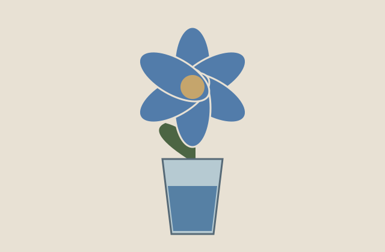

A question I could test
During middle childhood, I liked science experiments and finding out how things worked. One experiment I remember was using dye to try to change the color of flower petals. The petals turned blue. Looking back, I understand that the dye traveled with the water through tiny tubes in the stem called xylem and reached the petals. As water evaporates from a flower, more water is pulled up the stem (Museum of Science, 2024). This gave me a way to test a question and see the result for myself.

Connection to the textbook
1. Piaget’s concrete operational stage
Piaget described middle childhood as a time when children become better at logical thinking about real objects and events.
In the flower experiment, I watched the petals turn blue and thought about how the dye reached them. This connects to the logical thinking about real objects that Piaget described. (Riser et al., 2024, Section 7.2)
The bigger picture
Experiments depend on having materials and a chance to try things. Like access to the library, having opportunities for hands-on learning helped me follow my interests. Curiosity mattered, but so did the resources around me.
What I see now
The blue petals made the result easy to notice. Now I understand more about how water moves through a stem. The experiment reminds me that seeing a result is a starting point: I can still ask why it happened and look for an explanation.